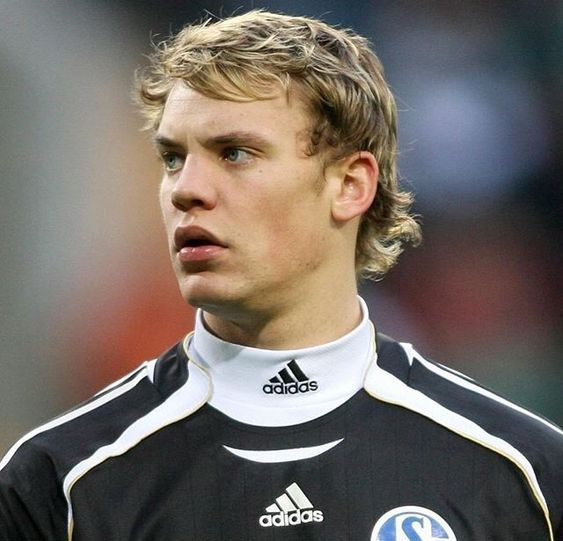
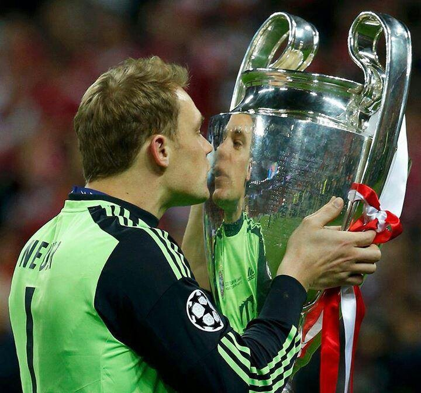
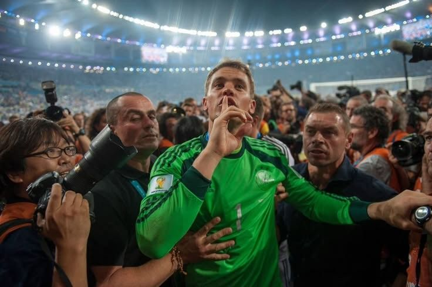
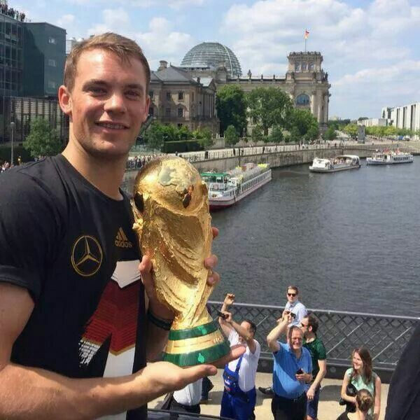
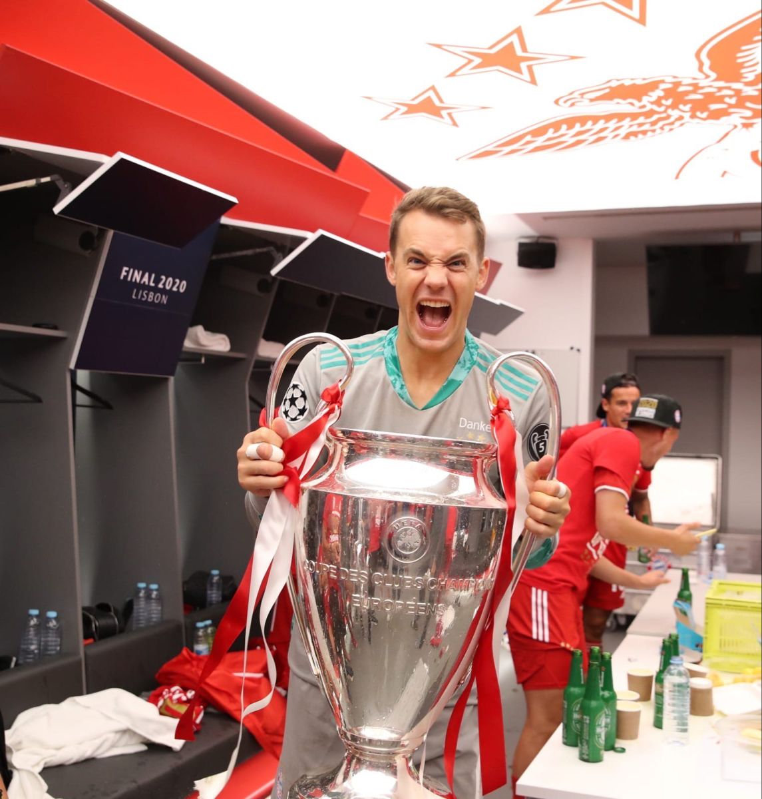
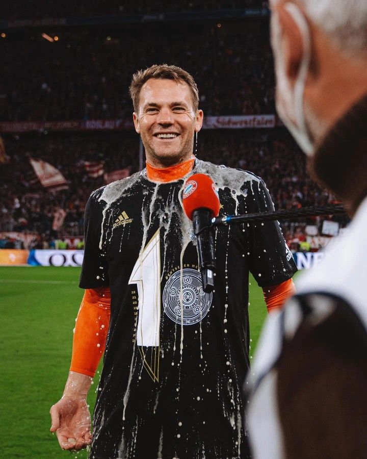

Manuel Neuer

Germanyy
2009-2024
Schalke 04
2005-2011
Bayern Munich
2011-Now


From a Schalke academy graduate to a revolutionary of the position, Manuel Neuer changed what it meant to be a goalkeeper. Born in 1986 in Gelsenkirchen, he made his name with fearless performances in the Bundesliga before becoming Bayern Munich’s long-term number one. Confident, composed and outrageous with the ball at his feet, Neuer effectively created the modern “sweeper-keeper” role. At his peak, he played like an extra defender, shutting down attacks before they even developed. He was central to Bayern’s domestic dominance and Germany’s 2014 World Cup triumph. For a generation, Manuel Neuer didn’t just raise the bar — he moved it entirely.

World Cup (1) |

Champions League (2) |

Bundesliga (12) |

DFB Pokal (6) |

German Super Cup (8) |

Super Cup (2) |

Club World Cup (2) |
| 2014 | 2013, 2020 | 2013, 2014, 2015, 2016, 2017, 2018, 2019, 2020, 2021, 2022, 2023, 2025 |
2011, 2013, 2014, 2016, 2019, 2020 |
2913, 2017, 2018, 2019, 2021, 2022, 2023, 2026 |
2014, 2021 | 2014, 2021 |





